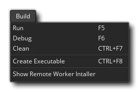

Le menu de construction est l'endroit où vous pouvez choisir de construire votre projet soit pour tester, déboguer ou comme un exécutable final. Les options disponibles sont:
- Exécuter - Exécutez votre projet actuel sur la plate-forme cible choisie pour les tests. Pour les différentes options de compilation disponibles lors de la compilation s'il vous plaît voir la section sur Compiling. Notez que cette commande est la même que d'appuyer sur le bouton Exécuter
dans l'IDE.
- Déboguer - Exécutez votre projet en cours pour tester avec le débogueur afin que vous puissiez voir des informations de performance détaillées et déboguer les erreurs ou les problèmes que vous pourriez avoir. Pour plus d'informations sur le débogage, consultez la section Débogage. Notez que cette commande est la même que d'appuyer sur le bouton Déboguer
dans l'IDE.
- Propre - GameMaker Studio 2 conserve un cache de fichiers pour accélérer le temps de compilation lors des tests. Cependant, parfois, un cache «périmé» peut entraîner des erreurs étranges et inattendues dans votre jeu. Dans ce cas, la première chose à faire est de nettoyer le cache d'ici et de le re-tester. C'est également une bonne idée de nettoyer le cache avant de créer un exécutable final pour la plate-forme cible. Notez que cette commande est la même que d'appuyer sur le bouton Nettoyer le cache
dans l'IDE.
- Créer un exécutable - Cela va compiler le projet en cours et créer un fichier exécutable (ou des fichiers) pour la plate-forme cible. Il ouvrira d'abord l'explorateur de fichiers afin que vous puissiez sélectionner où vous voulez sauvegarder le projet et ensuite compiler le jeu. Voir la section sur Compiler pour plus d' informations sur la mise en place des objectifs de compilation. Notez que cette commande est la même que d'appuyer sur le bouton Créer un exécutable
dans l'IDE.
- Afficher le programme d'installation des travailleurs distants - Cela ouvre une fenêtre d'explorateur de fichiers sur l'emplacement du programme d'installation de l'outil Travailleur distant (voir ici pour plus d'informations sur les travailleurs distants).